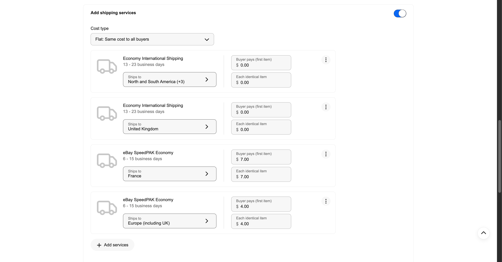
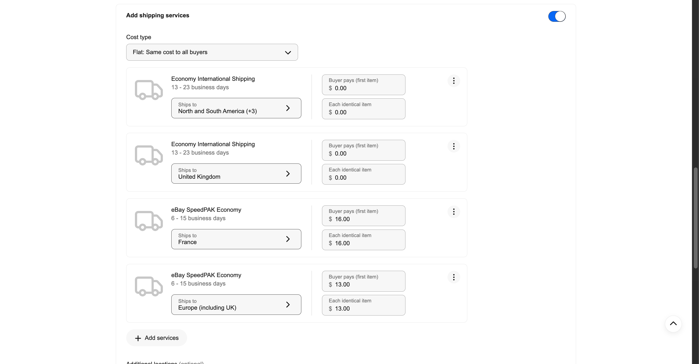

オレンジコネックスの発表内容の整理と、エコノミー中古・ゲーム中古ポリシーの変更内容の解説です。
2026年7月30日、オレンジコネックス（eBay公式の配送会社）から「eBay SpeedPAK Economy の対象国を、EU加盟27カ国すべてに拡大する」というお知らせが届きました。これまでEUの中でエコノミー便で送れるのはドイツだけでしたが、この日からフランス・イタリア・スペインなどEU全域に安い便で送れるようになりました。
少しさかのぼると、2026年7月1日にEUの関税制度が変わり、150ユーロ以下の荷物も免税ではなくなりました（関税の前払い＝DDPが必須）。このためEU向けは今まで、速いけれど高いクーリエ便（SpeedPAK Expedited）に、ヨーロッパ$24／フランス$27の送料を設定して対応していました。
今回エコノミー便がEU全域に使えるようになったので、EU向けの送料を大幅に下げる変更を行いました。これが本記事の内容です。
| 項目 | 内容 |
|---|---|
| 発効日 | 2026年7月30日 00:00（日本時間） |
| 対象国 | EU27カ国全域（それまではドイツのみ） |
| お届け日数 | 6〜16営業日 |
| 重量制限 | 30kg以下（ドイツは25kg、スウェーデンは20kg） |
| 寸法制限 | 体積180,000cm³以下。ドイツ以外は120×40×40cm、ドイツは120×60×60cm |
| 申告価値の上限 | 150ユーロ以下 |
| 追跡 | 完全追跡 |
新しい料金表（eBay SpeedPAK Economy・2026年7月30日発効）をもとに、同じ荷物を送った場合の主要国の支払い総額を比較しました。燃油12%と、通常時に必ず掛かる手数料を含んだ金額です。
| 重量 | アメリカ本土 ※ | イギリス | オーストラリア | EU:ドイツ | EU:フランス |
|---|---|---|---|---|---|
| 0.1kg | 1,541円 | 991円 | 1,206円 | 2,179円 | 2,765円 |
| 0.5kg | 2,421円 | 1,660円 | 1,721円 | 3,138円 | 4,146円 |
| 1.0kg | 3,435円 | 2,367円 | 2,184円 | 4,375円 | 5,677円 |
※アメリカはこの金額に加えて、商品価格に応じた関税の前払い分が別途掛かります。イギリスは関税系の前払いなし（VATはeBayが購入者から徴収）。EUは関税前払い（555円＋2.1%）込み。
EU向けのレーンを、クーリエ（SpeedPAK Expedited）からエコノミー（eBay SpeedPAK Economy）に切り替え、金額を大きく下げました。
| 宛先 | 変更前 | 変更後 |
|---|---|---|
| フランス | SpeedPAK Expedited $27.00 | SpeedPAK Economy $7.00 |
| ヨーロッパ | SpeedPAK Expedited $24.00 | SpeedPAK Economy $4.00 |
| 南北アメリカ・アジア・オーストラリア・メキシコ／イギリス | $0.00 | 変更なし（$0.00） |
ヨーロッパ$4は、EUの関税前払い（約3ユーロ）と処理手数料に相当する金額です。フランス$7は、フランス独自の通関手数料（約2ユーロ）を上乗せした金額です。

変更後のエコノミー中古ポリシー（フランス$7／ヨーロッパ$4・いずれもeBay SpeedPAK Economy）
ゲーム用も同じくエコノミーに切り替えましたが、金額はエコノミー中古より高い設定です。また、これまであったドイツ個別のレーンは廃止し、ヨーロッパ一律にまとめました。
| 宛先 | 変更前 | 変更後 |
|---|---|---|
| フランス | SpeedPAK Expedited $27.00 | SpeedPAK Economy $16.00 |
| ヨーロッパ | SpeedPAK Expedited $24.00 | SpeedPAK Economy $13.00 |
| ドイツ（個別レーン） | SpeedPAK Economy $13.00 | 廃止（ヨーロッパ$13に統合） |

変更後のゲーム中古ポリシー（フランス$16／ヨーロッパ$13・いずれもeBay SpeedPAK Economy）
ゲームの販売価格は、いちばん安い郵便のエコノミー送料を基準に計算しています。EU向けは実際にはSpeedPAK Economyで送るため、その送料の差額を関税分と一緒にシッピングポリシー側で回収する必要があります。エコノミー中古（$4／$7＝関税相当のみ）に送料差額を上乗せした結果が、ヨーロッパ$13／フランス$16です。